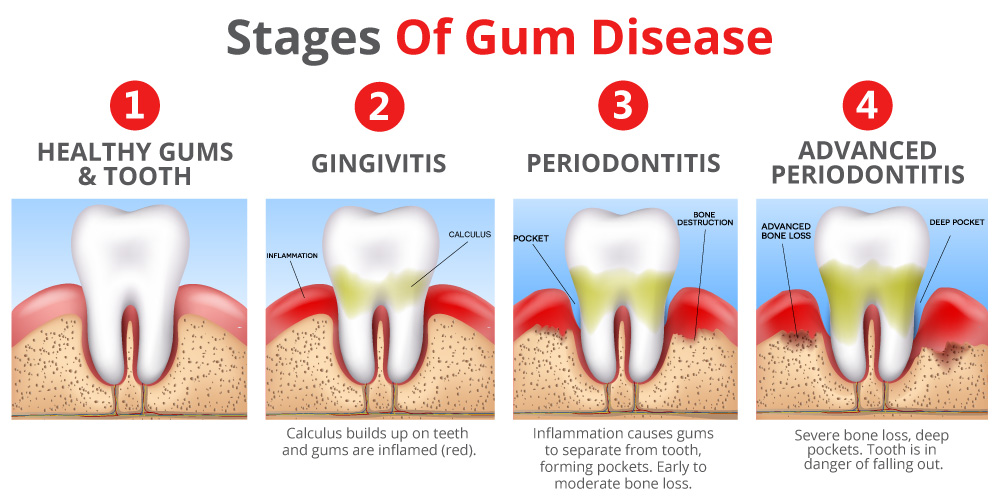

What Are the Stages of Gum Disease?
Gum Health :
Healthy gums are characterized by little to no bleeding and gum measurements of 3mm or less when probed by a hygienist. Healthy gums typically appear pink or brown and tight to the tooth.
Gingivitis :
Gingivitis is the first stage of gum disease in which inflammation is present in the gums. Gingivitis is characterized by bleeding and can result in gum measurements of 4mm or less when probed by a hygienist. The inflammation is caused by the bacteria found in plaque buildup on the teeth. This stage of gum disease is reversible with improved oral hygiene and/or therapies in the dental office. These bacteria can cause the gum tissue to become puffy and irritated in its presence, which can create deeper gum pockets that become harder to clean, resulting in the progression of gum disease. When inflammation is present for extended periods of time, permanent bone loss, or periodontitis, can occur.
Periodontitis :
Periodontitis, or periodontal disease, is the result of chronic gum inflammation that gradually breaks down the bone that supports our teeth. Periodontitis is characterized by excessive bleeding upon probing by a hygienist and can result in gum measurements of 5mm and above. Once bone loss begins, there is no way to reverse it, but it can be stabilized and controlled once treated. A procedure called Scaling and Root Planing (SRP) is the go-to treatment for periodontal disease. Your hygienist may also call this “periodontal therapy” or “deep cleans,” because in simpler terms, they are the process of cleaning out the bacteria and any tartar buildup that may be present in these deeper pockets where bone loss has occurred. Typically these are done using numbing of some kind for ultimate comfort and sometimes localized antibiotics, gum tissue irrigation, and laser bacterial reduction are done in conjunction to ensure the best results. The bacteria that cause gum disease repopulate every 90 days, so your dental team may suggest a more frequent recall of maintenance cleanings following the periodontal therapy. If left untreated, periodontitis can lead to significant bone loss, tooth mobility, and eventually tooth loss. The bacteria responsible for periodontitis can have detrimental effects on the rest of your body as well. For more information on this, see Healthier Smile, Healthier You ".
